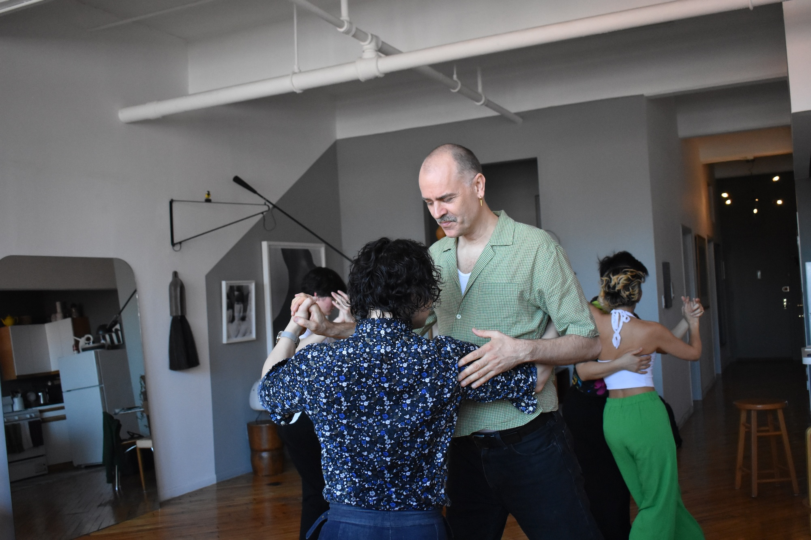
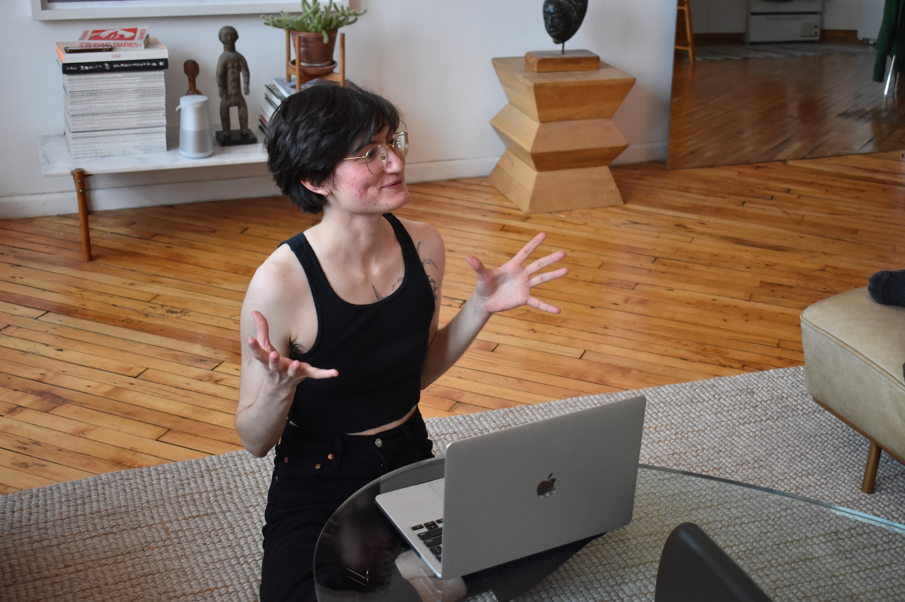
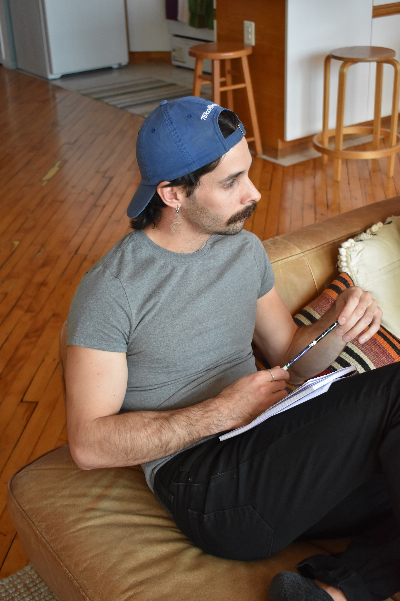
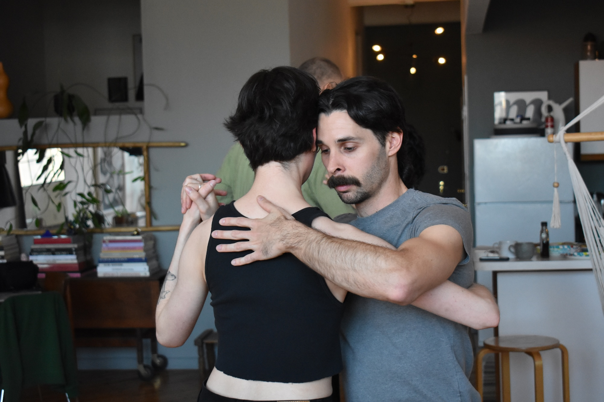
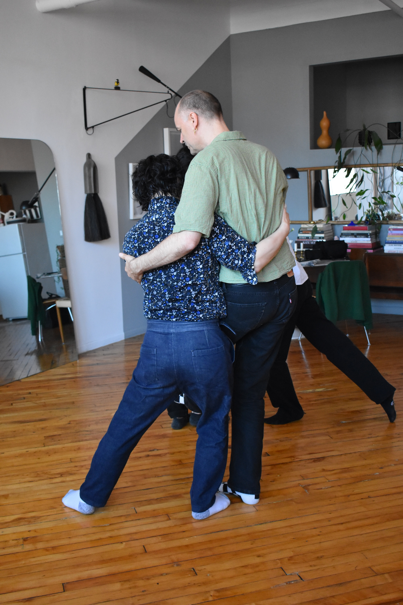
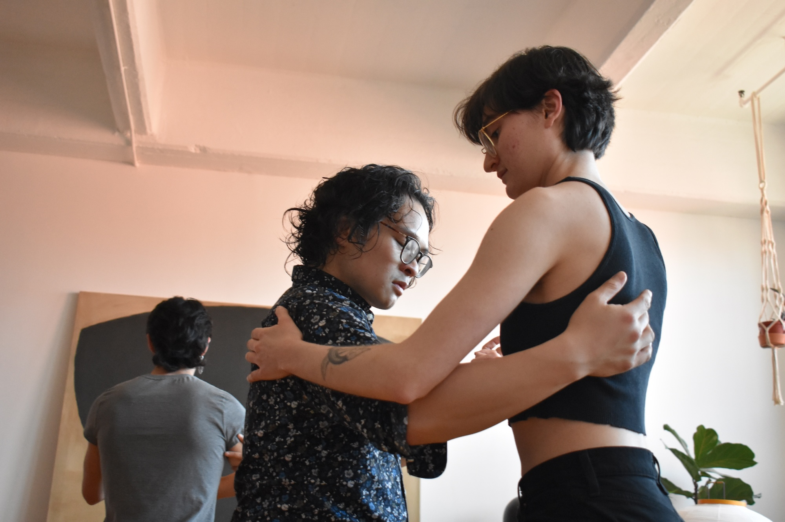

Continuing
Why do you continue to dance?

Phi Lee
It's changed over time. In the very beginning, it was partly a distraction, a little bit of an escape from the realities and the hardship of New York life, but the most significant experience for me was how it broke down my barrier with the male gender. I always had difficulty relating to men, cis men, not of any bad experience, but just–they felt like a completely different species to me and dancing tango, that intimacy somehow crumbled this wall that I had, and I was able to feel the humanity of that person [I was dancing with] and be able to experience and see the person for who they are, and not assign assumptions about them based on their gender. Gradually I also discovered that it's almost like a spiritual practice at times where you get to discover--if you are open to it, and if you ask the questions--a lot about yourself. You can find a lot of parallels and metaphors of how you are in the dance, and you can take that and relate it to every aspect of how you are in life. Later on, for me, it was also a really interesting way to navigate some trauma and recognize what is safe touch and what is not.

Mati
Well, first because I enjoy dancing a lot–without a doubt. And second, because for me it’s a social space where I know a lot of people and in which I feel that every day I learn a lot. I’m not taking a lot of classes anymore, although it’s not that I believe that I don’t need them. I believe that one can always keep learning. But my learning right now in tango is how to share with the people that generate it and at the same time create new spaces to try and generate something different from what already exists and that adapts more to my possibilities, to my search, and to what people that share interests with me are searching for too.
NW: In what sense?
I feel that the people I connect with the most aren’t the people that are most accepted in traditional spaces. So I feel the need to share with these people and at the same time create spaces where these people and I feel better or more included.

Norma
I stopped when I came to New York. I stopped for a long time. I didn’t feel called to continue dancing just at traditional milongas. I think I said “I want to find a queer space.” When I finally found one, I think that’s what called me to dance [again]. Like, that is the way I want to dance and these are the people I want to dance with. Despite the fact that I still go to traditional or regular milongas and enjoy them a lot, I think that [the queer tango space] caught my attention [as a way] to find my place as a human in tango.

Leo
I always tell students when they start their first class that tango is like entering a labyrinth and it’s a path that has only an entrance. It’s a labyrinth because you never exit. It isn’t a labyrinth that’s a burden–you enjoy it. And every step and every change that you make–because tango is never a straight path–it’s always changing. And you have moments where you’re good, moments when you’re bad, lows and highs. Because of this I consider it a labyrinth, because you never know where you’re going to end up. If this moment of your tango is happy, is sad…it’s like life. Tango accompanies you and matures along with you. Sometimes if you’re feeling bad it makes you feel better and sometimes if you’re feeling good it makes you feel worse, but that’s just how it is–that’s what happens. I always find in tango that way of being myself, of dancing. It’s not having to have anyone’s label put on you. When you’re dancing, when you’re performing or dancing socially with someone, it’s like you don’t have anything. It’s entering without any labels, without any prejudgements, nothing. It’s like “look, this is what I am.” and that freedom is something that I love. In fact, I also studied for a career in psychology, but dance was always what I wanted to do, so that’s what I did.

Mikael
So many different aspects. I don't know if I should say community first, but maybe it is. A community that we all are a part of and also the wonderful magic of what it is to dance tango. A friend once said, you have four dances to make somebody fall in love with you. [both laugh] And I really like that little saying, because to enjoy one another with music and the connection and the magic that you can take steps and feel where you're going is, to me, a magical dance, to be fully present with another person.

Arty
The community is so huge. I still swing dance, I still love swing dancing, and I do organize swing dance things. But one of the big things about why I stopped doing swing dance as much, and why I actually took a very, very long break from swing dancing, from dance in general, was because I started swing dancing in 2013. I was doing that for maybe four or five years straight in San Francisco, and I knew many, many people in the scene. However, something that I told people was I was frustrated how I wasn't really making friends. I wasn't really being invited out to dinners, people weren't messaging me to say, “Hey, are you going to this dance?” and I wasn't being added to group chats or anything.
There were two parts of it. One, I wasn't making the effort to make it community. I wasn't asking people, “Hey, do you want to go out for drinks after this, or do you want to meet up before this?” Or “Do you want to go out to a movie?” Other times, I was just going out there to dance, and the other side was I felt a little bit othered, and I don't know whether that was because I was queer, or…I don't think it really was that, or whether it was just a difference in mindset, or maybe I was just too shy, but after around four or five years of dancing with all the same people, but still not feeling that I had any connection with them, I felt like that made me want to stop. I just became kind of disillusioned. I was saying, why invest so much time and energy into this hobby where I'm not even making any friends?
…Then in tango, I think I made a much more concerted effort to talk to people, and--I don't always do it, I still prioritize the dance more than socialization, but I think when I came to New York, I was looking for friends and I was looking for community, obviously, because I had just moved to a brand new city, and so I think I made more of an active effort to follow up with people, to find people. And it is helpful that in New York, I think people are more open and inviting and want to hang out and make friends outside of the classes and outside of the socials. Tango really helped bring me closer and helped me make new friends. I think the commitment that I put into building community and making friends was matched in tango, and I really appreciate that, and also in swing dancing as well. So maybe it was New York [laughs] more than the dance itself. But, you know, I put in effort, and I am seeing clear reciprocation in terms of appreciation for each other.